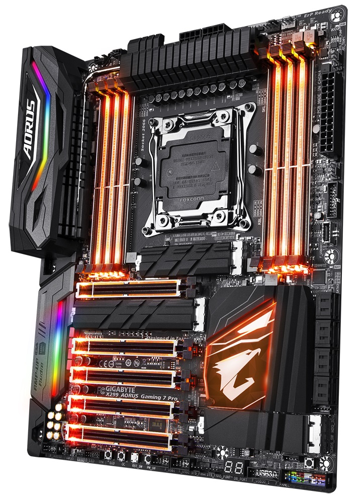

Componentes de una computadora:
¿Que es la motherboard?
La placa base, también conocida como tarjeta madre, placa madre o placa principal (motherboard o mainboard en inglés), es una tarjeta de circuito impreso a la que se conectan los componentes que constituyen la computadora.
Es una parte fundamental para montar cualquier computadora personal de escritorio o portátil o algún dispositivo. Tiene instalados una serie de circuitos integrados, entre los que se encuentra el circuito integrado auxiliar (chipset), que sirve como centro de conexión entre el microprocesador (CPU), la memoria de acceso aleatorio (RAM), las ranuras de expansión y otros dispositivos.
Está instalada dentro de una carcasa o gabinete que por lo general está hecha de chapa y tiene un panel para conectar dispositivos externos y muchos conectores internos y zócalos para instalar componentes internos.
La placa base, además incluye un firmware llamado BIOS, que le permite realizar las funcionalidades básicas, como pruebas de los dispositivos, vídeo y manejo del teclado, reconocimiento de dispositivos y carga del sistema operativo.

¿Como se realiza la correcta instalacion?
Abre el gabinete de tu computadora. Quítale ambos paneles para poder acceder fácilmente a la bandeja de la tarjeta madre. La bandeja de la tarjeta madre puede sacarse fácilmente, lo cual te permite instalarla sin tener que trabajar en ángulos raros. Solo recuerda que no todos los gabinetes tienen bandejas extraíbles.
- La bandeja de la tarjeta madre está sujeta con dos tornillos. Colócalos en un lugar donde no los pierdas.
- Instalar una tarjeta madre significa básicamente estar construyendo una nueva computadora. Necesitas reinstalar tu sistema operativo si estás actualizando tu computadora y también necesitas formatear la unidad del sistema. No puedes simplemente cambiar la tarjeta madre sin volver a instalar todo lo que tenías en tu computadora.
Haz tierra. Antes de empezar a trabajar en el interior de tu computadora o con tu tarjeta madre, asegúrate de descargar cualquier carga electroestática que puedas tener. Puedes tocar la llave del agua para descargar la carga que traes.
- Usa una pulsera de antiestática mientras estás trabajando en tu computadora para evitar dañarla con alguna descarga electroestática.
Reemplaza el protector del panel I/O. Este está ubicado en la parte trasera del gabinete, donde los conectores de la tarjeta madre se extienden hacia afuera para poder conectar tu monitor, dispositivos USB y demás dispositivos. La mayoría de los gabinetes tienen un protector para el panel ya instalado, el cual puede quitarse y reemplazarse con el panel que venga con tu tarjeta madre.
- Aplica presión en las 4 esquinas del panel para meterlo al gabinete. Deberá encajar en su sitio.
- Asegúrate de instalar el panel en la posición correcta. Compárala a la posición de los conectores en tu tarjeta madre para asegurarte que esté bien acomodado.
Encuentra los separadores (standoffs). Los separadores mantienen a la tarjeta madre despegada del gabinete. Algunos gabinetes ya vienen con separadores mientras que otros no. Tu tarjeta madre debe venir con sus propios separadores.
Instala los separadores. Haz coincidir los agujeros en la tarjeta madre con las ubicaciones disponibles para los separadores en la bandeja de la tarjeta madre. Cada gabinete y bandeja de la tarjeta madre es diferente, por lo tanto esos agujeros estarán en una ubicación diferente. Alinea tu tarjeta madre para ver dónde puedes usar los separadores y así ajustarlos. Cada agujero de la tarjeta madre deberá tener un separador en él.
- La mayoría de los separadores deben atornillarse pero algunos entran con solo aplicar un poco de presión.
- No todas las tarjetas madres se podrán unir con todos los agujeros disponibles. Conecta tantos separadores como sea posible, pero no uses extra. Los separadores solo deberán conectarse en las ubicaciones correspondientes a los agujeros de la tarjeta madre.
Coloca tu tarjeta madre en los separadores. Los agujeros y los separadores deberán quedar alineados. Si la bandeja de la tarjeta madre no se sale del gabinete, tendrás presionar gentilmente la tarjeta madre contra el panel I/O en la parte trasera del gabinete para que encaje en su lugar. Empieza a sujetar la tarjeta madre con los tornillos.
- No aprietes demasiado los tornillos. Asegúrate de que estén firmes pero no demasiado apretados. No se te ocurra usar un destornillador eléctrico.
- Los agujeros que no tienen metal en ellos necesitan arandelas de cartón entre el tornillo y la tarjeta madre. Es mejor evitar usarlos si no tienen metal.
Instala los componentes. Antes de volver a insertar la bandeja de tu tarjeta madre con tu nueva tarjeta, instala tu CPU, el enfriador del CPU y la memoria RAM. Hacer esto hará que conectarlos sea mucho más fácil. Si tu tarjeta madre no tiene una bandeja extraíble, instala tus componentes después del cableado.
Conecta la fuente de alimentación. Una vez que la tarjeta madre esté en su lugar, puedes empezar a conectar tus componentes. Se recomienda conectar primero la fuente de alimentación, ya que el enchufe será muy difícil de alcanzar una vez que hayas conectado todo lo demás. Asegúrate que tanto el conector de 20/24 pines y el conector 12V de 4/8 pines estén conectados.
- Si no sabes qué cables usar, lee el manual de la fuente de alimentación.
Conecta tu panel frontal. Para poder encender tu computadora con el botón frontal de encendido o para ver cuándo se accede al disco duro, necesitas conectar los interruptores e indicadores del panel frontal. Ubica los siguientes cables y conéctalos a los pines apropiados en la tarjeta madre:
- Interruptor de encendido
- Interruptor de reinicio
- LED de encendido
- LED del disco duro (HDD)
- Bocinas
Conecta los puertos USB frontales. Conecta cualquier puerto USB frontal a los conectores apropiados en tu tarjeta madre. Usualmente vienen etiquetados. Asegúrate de conectarlos en las ranuras correctas.
Conecta el ventilador. Conecta el ventilador del gabinete y del CPU en los pines correctos de la tarjeta madre. Usualmente hay varios lugares donde puedes conectar el ventilador del chasis, así como un conector de dos pines cerca del CPU para conectar el ventilador del CPU.
Instala tus unidades. Una vez que la tarjeta madre esté conectada y en su lugar, puedes empezar a instalar tus unidades. Asegúrate de instalar tu disco duro SATA y las unidades ópticas en los puertos SATA de la tarjeta madre.
Instala una tarjeta de video. Uno de los últimos componentes que debes instalar es la tarjeta de video. La tarjeta es la que ocupa más espacio lo cual hace que alcanzar otras áreas sea difícil, por eso se instala al final. Instalar una tarjeta de video puede ser opcional, depende del sistema y de tus necesidades.
Ajusta tu cableado. Ahora que ya conectaste todo a la tarjeta madre, es tiempo de mover el cableado para que el calor no se quede atrapado o para evitar que los cables queden atrapados en el ventilador. Mete el exceso de cables en la unidad y usa bandas de sujeción para sujetar todos los cables. Asegúrate que todos los componentes tengan espacio para respirar.Cierra la computadora. Vuelve a colocar los paneles laterales del gabinete y atorníllalos en su lugar. Conecta tu computadora y demás componentes. Enciende tu computadora y prepárate para instalar el sistema operativo. Lee los artículos a continuación para ver instrucciones específicas de cómo instalar cada sistema operativo